Replacing Reagent Pipettor Tubing with CnS Tubing
This procedure describes how to replace the non-CnS tubing with CnS reagent pipettor tubing.
Replace the non-CnS tubing with CnS reagent pipettor tubing when the reagent pipettor tubing requires service or replacement.
This document describes removing the tubing with the metal fitting and installing tubing with the CnS fitting.
Note: The CnS tubing is only compatible with the CnS transducer.
Reference Graphics:

Not shown:
- Moving (upper) End of Guide Chain (hidden under Guide Chain Mounting Bracket).
-
Upper Tubing Retainer Screw (same as lower Retainer Screws).
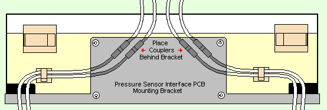
Note: DxI 600 instruments only have one pair (two) of pipettor tubes routed from the fluidics module.
- Open the main upper left cover and insert a cover interlock switch bypass.
-
Drain the tubing for each pipettor being serviced.
- From the Main Menu, select Diagnostics > Device Diagnostics > Digital Devices > Peristaltic and Vacuum Pumps.
- Enable the vacuum pump for the pipettor being serviced.
- Verify that the pipettor is directly over the wash tower.
-
Remove the fitting from the pipettor precision pump and allow the wash buffer to drain into the wash tower.
Caution: When draining wash buffer from the tubing, do not let fluid leak onto the instrument or any of the instrument components. When disconnecting the tubing, hold a dry towel at the in-line fitting.
- After the tubing is drained, disable the vacuum pump and exit the Digital Devices screen.
-
Remove the reagent pipettor tubing.
- Disable the pipettor motor, and manually move the pipettor carriage fully forward.
- Use a 1/4-in wrench to remove the metal fitting from the ultrasonic transducer.
- Cut and remove the cable-tie from the long service loop guide.
- Remove the guide cover from the long service loop guide (one screw).
- Remove the long and short service loop guides (two screws each).
- Disconnect the service loop cables from the transducer and the transducer heater (two connectors).
- Remove the tubing clamp near the end of the guide chain (one screw).
- Cut the metal fitting from the old tubing.
- Remove the metal fitting from the transducer.
- Pull out the tubing through the rear of the chain.
- Loosen one of the lower and upper tubing retaining screws (and washers) enough to remove the tubing.
-
Cut the tubing from the fitting on the pressure sensor.
Caution: When cutting the tubing from the fitting, do not damage the fitting.
- Pull the tubing out of the track under the washers.
-
Open the guide chain.
-
Remove the guide chain mounting bracket from the transducer carriage (two screws).
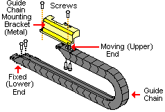
Note: The guide chains can be installed with the fixed (lower) end and moving (upper) ends as shown in the drawing or they can be reversed. Either way is acceptable, since there is no operational difference or increased risk of wear or failure between the two options. It is not necessary to reverse the ends of any guide chain in any instrument. - Remove the moving (upper) end of the chain from the guide chain mounting bracket (two screws).
- Remove the chain restraint (one screw).
-
Remove the screws holding the fixed (lower) end of the chain to the gantry (two screws).
Move the service loop cable forward and to the side to expose the mounting screws.
- Extend the chain to straighten it, and then rotate it so that the covers on the links face upward.
-
Open the link closest to the moving (upper) end, and then squeeze and disconnect it from the moving (upper) end.
Note: The link cover must be open to allow the chain to flex while disconnecting the moving (upper) end.
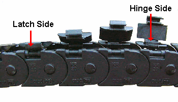
- Open the link closest to the (lower) end of the chain, and then disconnect the fixed (lower) end from the chain link.
-
Remove the guide chain mounting bracket from the transducer carriage (two screws).
-
Install the CnS tubing.
Note: CnS tubing comes with the sheathing installed. This prevents the tubing from moving while it is installed, but also gives the FSE an indication of where to install the tubing.
-
Open all the chain links.
Note: When installed, the chain links should open away from each other.
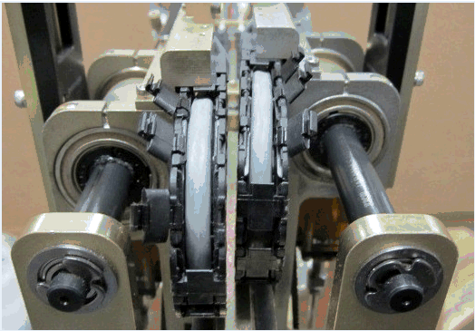
-
Place the tubing into the chain, starting at the moving (upper) end.
Note:
- Before connecting the moving (upper) end of the tubing to the chain, check that the tubing is oriented correctly.
- With the open side up, position the tubing under the service loop cable.
- Confirm that the CnS fitting end of the tube is toward the front of the instrument.
- Close all of the chain covers.
-
Rotate the chain so that the covers face downward, and then connect the chain to the fixed (lower) end of the tubing.
Note: Route the tubing so that it is on top of the service loop cable when it exits the rear of the chain.
-
Use the two screws to mount the moving (upper) end bracket to the metal mounting bracket. Connect the front end of the chain to the moving (upper) end.
Note: Before connecting the moving (upper) end of the tubing to the chain, check that the tubing is oriented correctly.
- Attach the chain mounting bracket to the transducer carriage (two screws).
-
Open all the chain links.
-
Connect the CnS tubing.
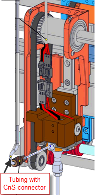
- Connect the CnS fitting onto the transducer and tighten the CnS fitting until it clicks.
- Connect the service loop cables to the transducer and transducer heater (two connectors).
-
Route the tubing and service loop through the long service loop guide, and then reattach the guide to the pipettor gantry. Route the tubing and service loop through the short guide, and then reattach the guide to the pipettor gantry.
Caution: Do not overtighten the guide screws. The threads of the mounting holes are plastic and can be stripped easily.
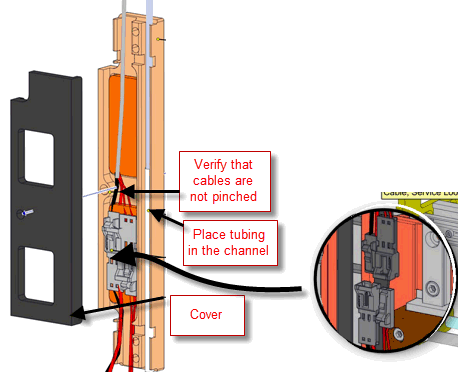
-
Install the guide on the transducer.
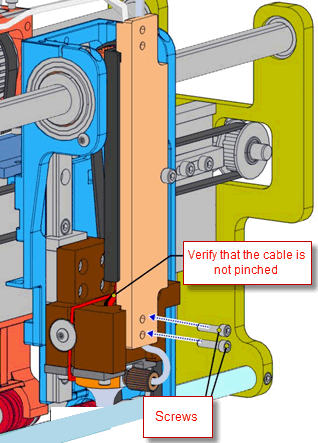
-
Install the chain guide on the chain mount.
Note: The left side uses the pointed chain guide, the right side uses the rounded chain guide.
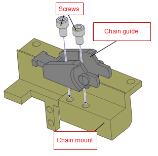
-
Install the chain mount, but do not tighten the screws. Verify that the sheathing is located correctly and that the cable or tubing is not pinched, and then tighten the screws.
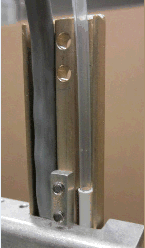
-
Confirm that the cable and tube loops clear the z-motor when the pipettor carriage is moved fully to the rear.
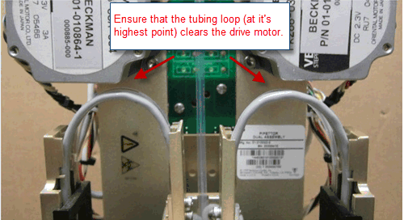
-
Install the chain guide.
Note: The left side uses the pointed chain guide, the right side uses the rounded chain guide.
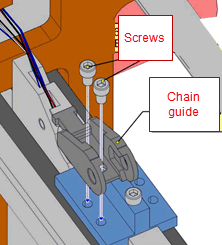
-
Install the chain into each end of the guide.
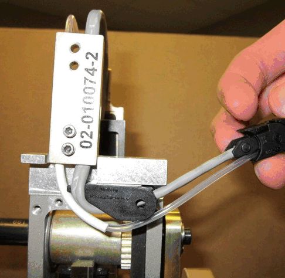
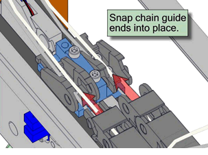
-
Install the chain restraint (one screw).
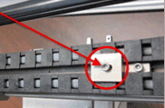
-
Mount the tubing clamp at the rear end of the chain (one screw). Verify that the sheathing is located at the clamp.
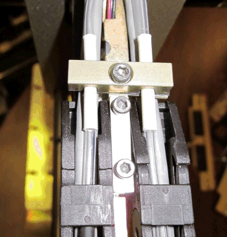
- Route the tubing through the hold-down washers on the gantry and the lower plastic clamp on the front of the reservoir. Connect the tubing to the appropriate pressure monitor fitting.
- Manually move the gantry along the full length, and verify that the motion is smooth.
-
Perform these quality checks before verification.
- Verify that all the tubing fittings are secure, before running fluids through them.
- Loosen and then retighten the flare coupler that connects the two pieces of tubing to verify that they do not leak.
- Verify that the highest point on the tubing loop clears the drive motor, when the reagent pipettor carriage is moved toward the rear of the instrument.
- Verify that the tubing is not kinked.
-
Adjust the ultrasonics voltage for the CnS transducer.
Note: Refer to the RP: Adjusting Ultrasonics CnS Transducer Voltage procedure.
-
Verify the tubing installation.
- Prime the reagent pipettor once, and monitor for leaks. Then prime the reagent pipettor 10 times, and monitor for leaks.
- Select Diagnostics > Device Diagnostics > Analog Devices > Sensor Calibration > Pressure, and then calibrate the pressure monitoring for the pipettor that was serviced.
-
Perform 100 reps of the wet and dry test on each pipettor and verify that:
- no failures are reported.
- wet test CVs are 1% or less.
If the Wet/Dry test fails, then contact the local support organization for your area. - Remove interlock bypasses, close the instrument covers, initialize the system (if not ready).
- Perform system checks and verify that all specifications are met.
-
Verify system operation.
-
Perform system verification as stated in the Verification of Service Repair document .
Refer to the Admin: Verification of Service Repair document.
-
Perform system verification as stated in the Verification of Service Repair document .